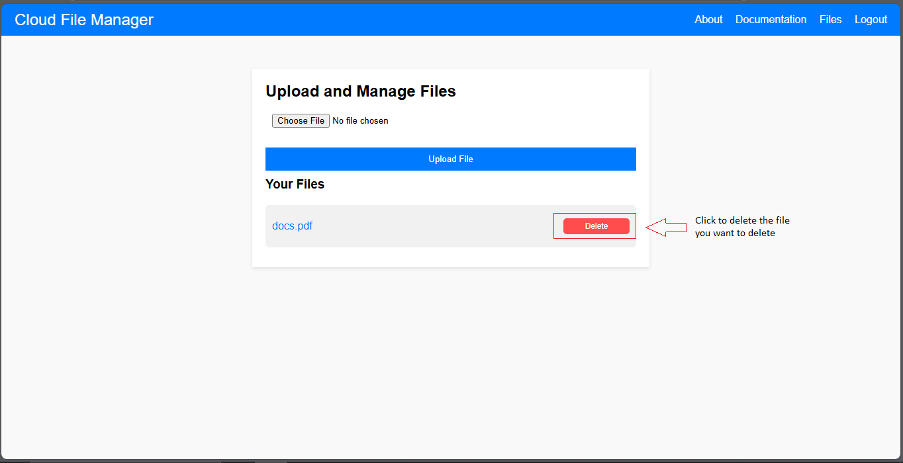

Welcome to the Cloud File Manager! This application allows you to upload, view, and manage your files using Firebase Storage and Authentication, which are both part of Google's cloud services. By utilizing cloud network technology, this platform provides seamless, secure, and scalable storage for your files, accessible anytime and from anywhere.
This project leverages cloud network services to provide users with secure and scalable file management. It uses Firebase, a powerful platform from Google, which offers cloud storage solutions, authentication, and real-time capabilities. The cloud infrastructure ensures that your files are stored remotely, eliminating the need for physical storage devices and allowing them to be easily accessible from any device with an internet connection. The cloud also enables enhanced collaboration, data redundancy, and backup capabilities, ensuring that your data is always safe and available.
Begin by signing up or logging in to the system using your credentials. This ensures that your files are stored securely in your personal cloud storage space.
Once logged in, go to the file upload section, click on the "Choose File" button, select the file you want to upload, and click the "Upload File" button. The file will be uploaded to Firebase Storage.
After uploading, your files will appear in the "Your Files" section. You can view, download, or delete any of your files by clicking the respective buttons next to each file.
To download a file, click the "Download" button next to the file you wish to retrieve. The file will be downloaded to your device.
If you want to remove any file from the cloud, simply click the "Delete" button next to the file. This will permanently remove it from your cloud storage.
When you're done managing your files, make sure to log out of the system to ensure your account is secure. Click the "Logout" button in the navigation bar.
By using Cloud File Manager, you eliminate the need for physical storage devices, such as hard drives, and benefit from fast, reliable, and accessible file management. The cloud network offers reliability, redundancy, and speed—ensuring your files are always available when you need them. Furthermore, the cloud enables features like real-time syncing and collaborative file sharing, enhancing your experience with seamless integration into your digital workflow.
Name: Lepiten, James Arnold A.
Age: 22
School: STI Caloocan
Year & Section: 4-BSIT BT704
The first step in the project was to research the cloud storage technologies available, such as Firebase and other cloud platforms. This involved understanding the key concepts of cloud storage, data security, and scalability, ensuring the chosen platform would meet the project’s needs.
Once the cloud platform was chosen (Firebase), the next step was designing the system architecture. This included deciding how the user interface should look, determining the flow of user interactions, and planning how the cloud storage, authentication, and file management features would work together seamlessly.
After the design was completed, the development began. This included coding the user interface with HTML and CSS, and integrating Firebase using JavaScript. The main functionality, such as file upload, download, and deletion, was coded, as well as implementing Firebase Authentication for secure login.
The final step was deploying the project online so that users could access it. This involved using GitHub Hosting to host the web application. The application was tested for functionality and security before being made publicly available for use.